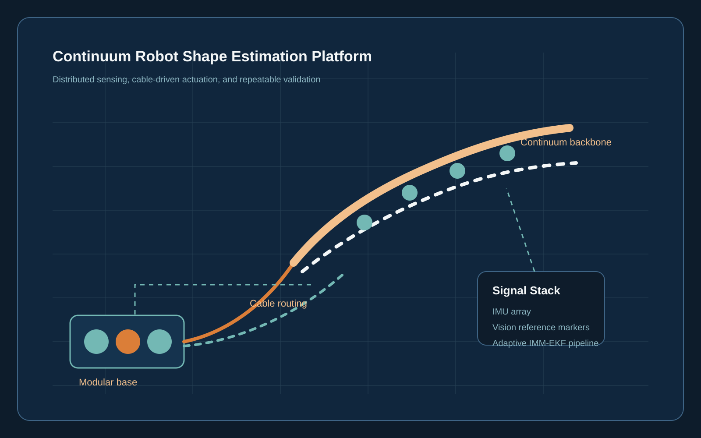
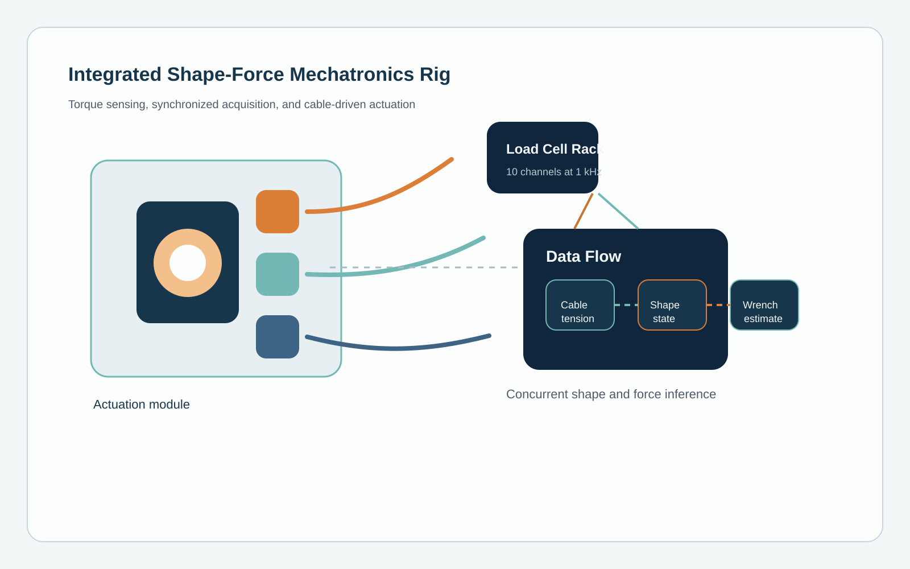
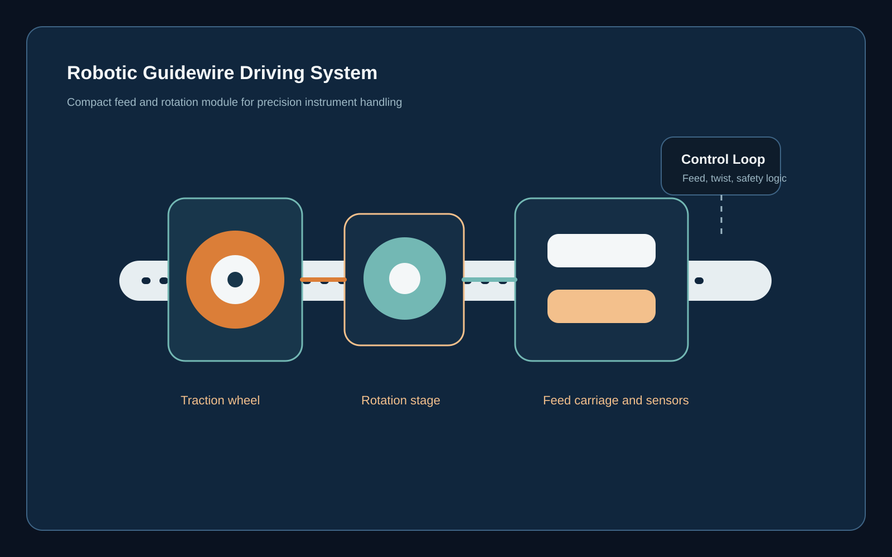
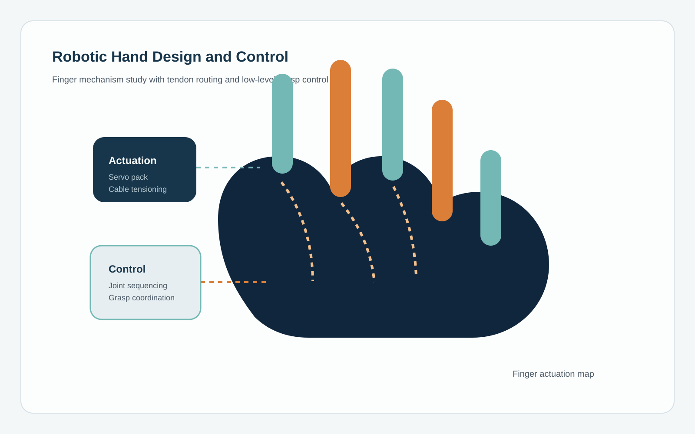

Completing a Ph.D. on concurrent shape-wrench estimation for continuum robots using SE(3) Lie group formulations and real-time validation.
What I Am Working On
Looking for robotics software and controls roles where real-time systems, estimation, and hardware integration all matter.
Preparing journal submissions around integrated shape-force sensing and experimental evaluation on custom mechatronics platforms.
About Me
I am a Robotics R&D Engineer with 5+ years of experience building and validating real-time control and estimation systems for continuum and surgical robots. I have delivered production-grade tooling in collaboration with Johnson & Johnson and Auris Health, with hands-on experience across C++, Python, ROS2, Simulink Real-Time, and hardware-in-the-loop testing.
My Ph.D. research at Stevens Institute of Technology focuses on state estimation algorithms that allow continuum robots to estimate both shape and external forces in real time, combining sensing, mechanics, and geometric control ideas into systems that can run on physical hardware.
I enjoy building across the full robotics stack: CAD and mechatronics design, sensing architecture, estimation and controls, embedded integration, and experimental validation on benchtop and real-time test platforms.
Research Platforms & Robotics Builds
A more visual look at the kinds of systems I build: instrumented continuum robot platforms, force-sensing mechatronics rigs, and compact robotic devices developed through research and side projects.

Ph.D. Research Platform 01
Continuum Robot Shape Estimation Testbed
A modular hardware platform for validating adaptive shape estimation with distributed sensing, cable actuation, and repeatable bench-top experiments.

Ph.D. Research Platform 02
Integrated Shape-Force Mechatronics Rig
A hardware platform combining cable-driven actuation, inline torque sensing, and real-time data acquisition for concurrent shape and force estimation.

Side / Course Project
Robotic Guidewire Driving System
Concept work around a compact drive module for controlled guidewire feed and rotation, focused on precision transmission and operator-safe mechanical packaging.

Side / Course Project
Robotic Hand Design and Control
A multi-finger robotic hand study focused on tendon routing, finger mechanism design, and low-level grasp control for coordinated motion.
Technical Skills
Programming
- C++17 and object-oriented software design
- Python for tooling, analysis, and automation
- MATLAB and Simulink
Robotics & Estimation
- ROS and ROS2
- EKF and IMM-based state estimation
- Sensor fusion, kinematics, and statics
- Continuum and cable-driven robot modeling
Real-Time Systems
- Simulink Real-Time
- Speedgoat deployment and logging
- EtherCAT communication
- Hardware-in-the-loop testing
Hardware & Design
- SolidWorks CAD
- Motor and servo integration
- IMU, EM, torque, and vision sensing
- Actuation packaging and bench-top validation
Featured Projects & Experience
Johnson & Johnson | Ottava Surgical Robotics Program
Continuum Instrument State Observer Development
Oct 2021 - May 2022
Developed real-time state estimation systems for a 7-DOF flexible surgical instrument with cable-driven bending and rotation. Built configuration-space Extended Kalman Filter observers to estimate instrument pose from multi-sensor fusion.
- Derived continuum-instrument kinematics and geometric Jacobians for a cable-driven wrist
- Implemented an EKF observer with analytic measurement Jacobians and OptiTrack fusion
- Built pose-error analysis using Gaussian position ellipsoids and Bingham quaternion statistics
- Developed ROS2 and RViz tooling for multi-sensor debugging and experimental validation
Performance: Less than 5 mm position error and less than 5 degrees
orientation error in typical cases, with worst-case behavior around 17 mm and 23 degrees.
Auris Health | Johnson & Johnson
Real-Time Control Platform for Bronchoscopy Robot
May 2020 - Aug 2020
Architected a Simulink Real-Time platform on Speedgoat hardware to accelerate control algorithm development for surgical robotics and integrate a multi-sensor hardware stack with deterministic timing.
- Built a workflow with automatic C code generation, online tuning, and 1 kHz logging
- Integrated EM tracker, IMU, torque cells, and Elmo servo drives over EtherCAT
- Implemented wire tensioning, orientation calibration, and actuation compensation routines
- Performed motor system identification using chirp excitation and frequency response analysis
Impact: Reduced control iteration time from days to hours while enabling
1 kHz real-time execution across a multi-actuator platform.
Stevens Institute of Technology | Ph.D. Research
Adaptive Shape Estimation for Continuum Robots
2019 - 2025
Developed stochastic shape estimation algorithms in a polynomial-curvature state space with adaptive multi-model filtering for robustness under sparse, noisy sensing.
- Implemented IMM-EKF estimation across varying deformation regimes
- Built real-time estimation stacks on Speedgoat, Simulink, ROS2, C++, and Python
- Designed validation around IMUs, torque cells, and ArUco-based vision tracking
- Released reusable ROS2 estimation packages used across the lab
Accuracy: 0.38 percent tip position error, 0.24 percent shape position
error, and 0.63 degrees per 100 mm tip bending.
Modular testbed used to connect sensing, estimation, and repeatable hardware experiments.
Stevens Institute of Technology | Ph.D. Research
Integrated Shape-Force Estimation Framework
2022 - Present
Built an integrated estimation framework combining polynomial-curvature kinematics with virtual-work principles to simultaneously estimate continuum robot shape and external forces.
- Developed SE(3) shape-wrench estimation using Lie group formulations
- Integrated cable tension measurements with tip pose for force inference
- Built modular actuation units with 10 torque cells sampled at 1 kHz
- Validated performance with OptiTrack motion capture and runtime feasibility analysis
Accuracy: 0.20 mm arc-length-averaged shape MAE and 0.05 N overall
force MAE on the experimental platform.
Custom mechatronics platform with cable routing, inline sensing, and synchronized data capture.
Selected Publications
Stochastic Adaptive Estimation in Polynomial Curvature Shape State Space for Continuum Robots
IEEE Transactions on Robotics
Published 2026
Integrated Shape-Force Estimation for Continuum Robots: A Virtual-Work and Polynomial-Curvature Framework
IEEE/ASME Transactions on Mechatronics
Under Review
Recursive Shape Estimation and External Wrench Inference for Continuum Robots: An SE(3)-Based Reduced-Order Modal Framework
IEEE Transactions on Robotics
In Preparation
A Modular Continuum Manipulator for Aerial Manipulation and Perching
ASME IDETC 2022
Published